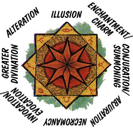

The Schools of Magic
Spells are divided into nine different categories, or schools, according to
the types of magical energy they utilize. Each school has its own special methods
and practices.
Although they are called schools, schools of magic are not organized places
where a person goes to study. The word “school” identifies a magical discipline.
A school is an approach to magic and spellcasting that emphasizes a particular
sort of spell. Practitioners of a school of magic may set up a magical
university to teach their methods to beginners, but this is not necessary. Many
powerful wizards learned their craft studying under reclusive masters in distant lands.
The nine schools of magic are Abjuration, Alteration, Conjuration/Summoning, Enchantment/Charm, Greater
Divination, Illusion, Invocation/Evocation, Necromancy, and Lesser Divination.

This diagram illustrates the schools that oppose each other. See Table 22 and its entry descriptions for more information.
Of these schools, eight are greater schools while the ninth, lesser
divination, is a minor school. The minor school of lesser divination includes all
divination spells of the 4th spell level or less (available to all wizards). Greater
divinations are those divination spells of the 5th spell or higher.
Table of Contents